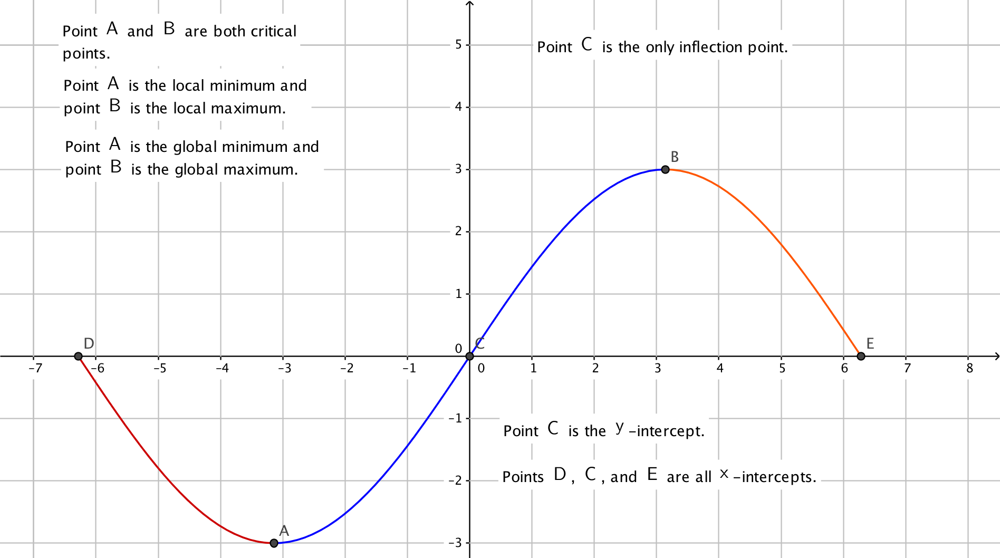

Domain
\(x,y\)-intercepts
Symmetry
Asympotes
Intervals of increasing/decreasing
Maxima/Minima
Inflection points
Intervals of concavity
Sketch a graph of \(f\)
- (a)
- Domain: This was given as \([-2\pi ,2\pi ]\)
- (b)
- \(x,y\)-intercepts:
x-interpects occur when \(f(x) = 3\sin \left (\frac {x}{2}\right )=0 \implies \frac {x}{2}=0+k\pi \) where \(k\) is an integer, \(-1\le k \le 1\). On the domain this is \(x=-2\pi ,0,2\pi \). y-intercepts: \(f(0) = 3\sin \left (\frac {0}{2}\right )=0\) The y-intercept is the point \((0,0)\) - (c)
- Symmetry:
\(f(-x)=3\sin \left (\frac {-x}{2}\right )=-3\sin \left (\frac {x}{2}\right ) \ne f(x)\) so \(f\) is not even \(-f(x)=-3\sin \left (\frac {x}{2}\right )=f(-x)\) so \(f\) is odd - (d)
- Intervals of increasing/decreasing: \[ f'(x) = 3 \cos \left (\frac {x}{2}\right ) \cdot \frac {1}{2} = \frac {3}{2} \cos \left (\frac {x}{2}\right ) \]Since \(f'\) is defined everywhere on \((-2\pi , 2\pi )\) to find the critical points we just solve the equation \(f'(x) = 0\) where \(-2\pi < x < 2\pi \):\begin{align*} f'(x) = 0 &\iff \frac {3}{2} \cos \left (\frac {x}{2}\right ) = 0 \\ &\iff \cos \left (\frac {x}{2}\right ) = 0 \\ &\iff \mbox {$-2\pi < x < 2\pi $ and $x/2 = \pi /2 + n\pi $ with $n$ an integer}\\ &\iff \mbox {$-2\pi < x < 2\pi $ and $x = \pi + n2\pi $ with $n$ an integer}\\ &\iff \mbox {$x = -\pi $ and $x = \pi $.} \end{align*}
So the only critical points are \(x = -\pi \) and \(x = \pi \).
If \(-2\pi <x< -\pi \), it follows that \(-\pi <x/2<-\pi /2\) so \(x/2\) lies in the third quadrant and \(\cos (x/2)<0\).
If \(-\pi <x< \pi \), it follows that \(-\pi /2<x/2<\pi /2\) so \(x/2\) lies in the fourth and first quadrants and \(\cos (x/2)>0\).
If \(\pi <x< 2\pi \), it follows that \(\pi /2<x/2<\pi \) so \(x/2\) lies in the second quadrant and \(\cos (x/2)<0\)\(\implies f\) is increasing on the interval \((-\pi , \pi )\), and \(f\) is decreasing on the intervals \((-2\pi , -\pi )\) and \((\pi , 2\pi )\).
- (e)
- Maxima/minima:
The first derivative test states we have a local maximum if the sign of \(f'\) changes from positive to negative, and a local minimum if the sign of \(f'\) changes from negative to positive.
Therefore there is a local maximum at \(x = \pi \) and local minimum at \(x = -\pi \) by the results in part (d).
- (f)
- Intervals of concavity: Concavity can change at interior points in \([-2\pi , 2\pi ]\) where \(f''\) is
undefined or equal to 0 are only candidates for the inflection points. \[ f''(x) = \frac {-3}{2} \sin \left (\frac {x}{2}\right ) \cdot \frac {1}{2} = \frac {-3}{4} \sin \left (\frac {x}{2}\right ) \]\(\frac {-3}{4} \sin \left (\frac {x}{2}\right )=0\) when \(\sin \left (\frac {x}{2}\right )=0\) which in the domain of \(-2\pi < x < 2\pi \) occurs at \(x/2 = n\pi \) with \(n\) an integer. \(-2\pi < x < 2\pi \) and \(x = n2\pi \) with \(n\) an integer \(\implies x = 0\)
We have a candidate for an inflection point at \(x=0\).
If \(-2\pi <x< 0\), it follows that \(-\pi <x/2<0\) so \(x/2\) lies in the third and fourth quadrant and \(\sin (x/2)<0\).
If \(0 <x<2 \pi \), it follows that \(0<x/2<\pi \) so \(x/2\) lies in the first and second quadrant and \(\sin (x/2)>0\).
So \(f\) is concave up on the interval \((-2\pi , 0)\), and \(f\) is concave down on the interval \((0, 2\pi )\).
- (g)
- Inflection points: Inflection points occur where the concavity of a function
changes. Those interior points in \([-2\pi , 2\pi ]\) where \(f''\) is undefined or equal to 0 are only
candidates for the inflection points. We found in part f that we had a candidate
for an inflection point at \(x=0\). We verified in part f that concavity changes at
\(x=0\).
Since \(f(0)=3\sin \left (\frac {0}{2}\right )=0\), the inflection point is \((0,0)\)
- (h)
- Sketch the graph:
